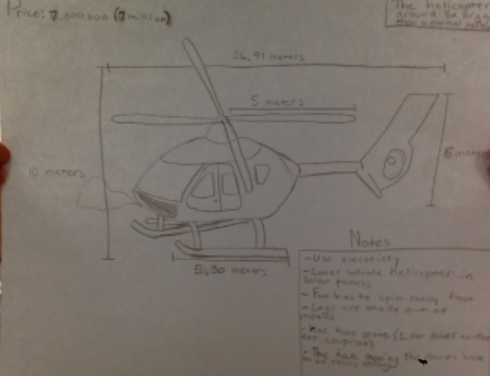

Our new product, the CloudSweeper78Max, was created April 2nd 2022. This product transports clouds over to a area where they have droughts. Our most common location where we send them to is Ethiopia. We have helped over 300,000 people from what we have done.

How this product is made
This product is made with very fast spinning fans. The fans go into the helicopter in the front. Since we have to have a lot of air to push the clouds foward, we make our helicopter 5x bigger than a normal helicopter. The reason why we make it 5x bigger is becuase we need more fans to fit into so it has more air to push it foward.